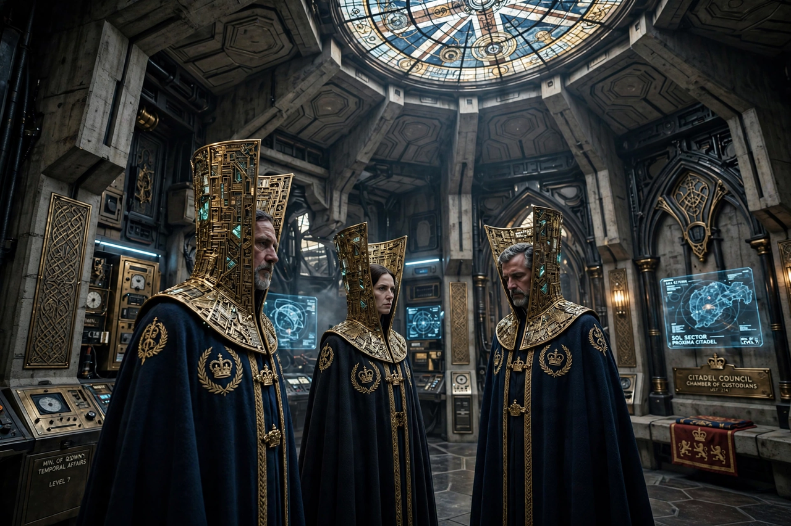

| Time Lord | |
|---|---|
 | |
| First appearance | The War Games (1969) |
| Home planet | Gallifrey |
| Notable members | The Doctor, the Master, Rassilon, Romana, the Rani |
| Abilities | Regeneration (up to twelve times), two hearts, telepathy, time sensitivity |
The Time Lords are a fictional ancient race in the British science fiction television series Doctor Who. Inhabitants of the planet Gallifrey, they are the custodians of time travel, having developed the technology billions of years in the universe's past under figures such as Rassilon and Omega. The series' protagonist, the Doctor, is a renegade Time Lord who fled Gallifrey in a stolen TARDIS.
Time Lords are outwardly human but possess two hearts and a "respiratory bypass system". When mortally wounded they can regenerate, rewriting their bodies into a new incarnation with a different appearance and personality — traditionally a maximum of twelve regenerations (thirteen lives). Their society, ruled from the Citadel by a High Council under a Lord President, adopted a strict policy of non-interference in the affairs of other species, enforced by agencies such as the Celestial Intervention Agency.
The Time Lords were first seen in The War Games (1969), which exiled the Second Doctor to Earth. In the 2005 revival it was revealed that the Time Lords had been destroyed in the Last Great Time War against the Daleks, leaving the Doctor apparently the last of his kind; "The Day of the Doctor" (2013) rewrote the ending so that Gallifrey was hidden in a pocket universe, and the planet and its people have since reappeared — and been destroyed again by the Master in "The Timeless Children" (2020), which revealed the Doctor to be the source of the Time Lords' regenerative ability.
Daleks · Raymond Cusick · Doctor Who · Science fiction film
From Wikipedia, the free encyclopedia (recreated from memory).